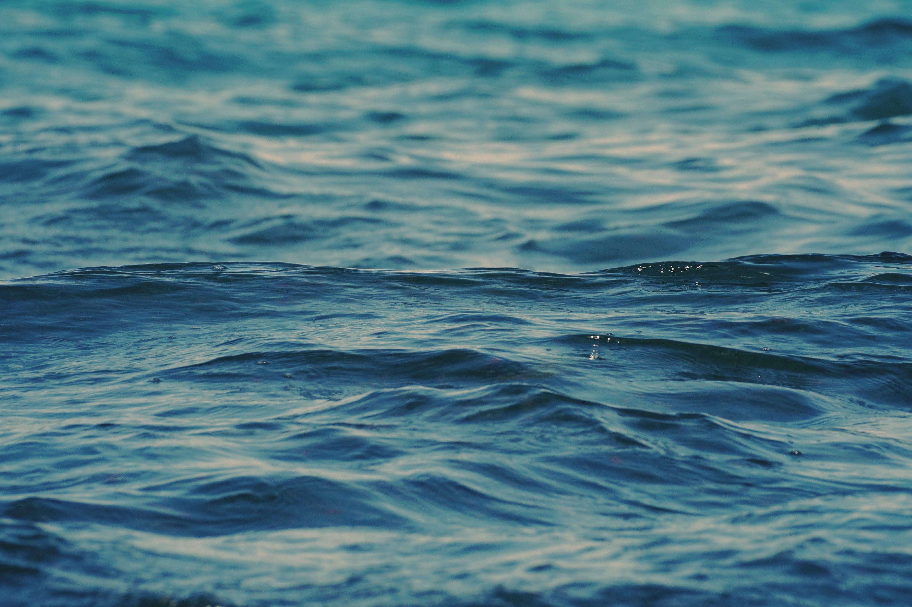

Latidos Marinos, del ruido urbano al movimiento orgánico
- Duración
- 9 horas
- Agrupamiento
- Alumnas de 3º DCON de Taller Coreográfico
Bienvenidas!
¿Alguna vez te has parado a escuchar el ritmo que esconde tu ciudad? ¿Sabías que los ruidos de los coches, las sirenas o el bullicio de las calles pueden convertirse en el motor de una danza?
En este proyecto vamos a vivir una aventura creativa única. No solo vamos a bailar; vamos a ser exploradoras sonoras. Nuestra misión será capturar esos "ruidos" urbanos y transformarlos en un lenguaje corporal que dé voz a los habitantes más silenciosos del planeta: las especies marinas en peligro de extinción.
¿Cuál es vuestro reto?
Aprenderéis a editar vuestro propio paisaje sonoro, a crear una coreografía inspirada en el movimiento del mar y a fusionarlo todo en una videocreación artística usando Canva.
Vuestro cuerpo y vuestra tecnología se unen para lanzar un mensaje al mundo: la naturaleza también late, y es hora de que la escuchemos.
¡Preparad vuestros sentidos, porque empezamos!

Imagen de Kranick79 en Pixabay (Licencia Pixabay)